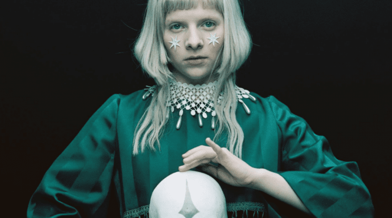

Aurora
urora Aksnes (Stavanger, 15 de junho de 1996), conhecida profissionalmente apenas como Aurora e as vezes estilizdo em caixa alta como AURORA, é uma cantora e compositora norueguesa.
A cantora Aurora é a nova aposta do cenário indie pop, cena que revelou nomes como Florence and The Machines, Grimes e CSS. Nascida em Os, na Noruega, a artista lotou shows em recente passagem pelo Brasil ao vocalizar a melancolia de uma juventude aterrorizada com os horrores e os desejos contemporâneos.
Com um EP (“Running With The Wolves”) e um álbum (“All My Demons Greeting Me as a Friend”), Aurora ganhou protagonismo na indústria fonográfica. Ainda em 2015, quando a norueguesa tinha apenas 17 anos, Katy Perry não economizou elogios à cantora.

Conquistas
- Após cobrir "Half The World Away", começou a receber grande reconhecimento internacional e admitiu nos tablóides britânicos que nunca tinha ouvido falar da enorme cadeia retalhista John Lewis antes de ser contratada para cantar para o seu comercial.